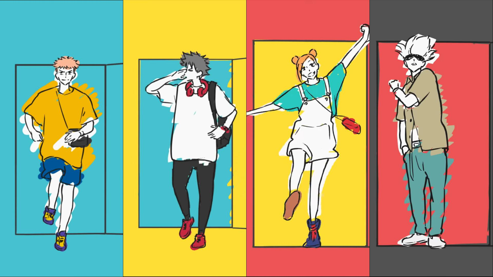

Listas
- html
- css
- JS
- Angular
- Bootstrap
Mussum Ipsum, cacilds vidis litro abertis. Suco de cevadiss deixa as pessoas mais interessantis. Mais vale um bebadis conhecidiss, que um alcoolatra anonimis. Suco de cevadiss, é um leite divinis, qui tem lupuliz, matis, aguis e fermentis. Nullam volutpat risus nec leo commodo, ut interdum diam laoreet. Sed non consequat odio. Per aumento de cachacis, eu reclamis. Tá deprimidis, eu conheço uma cachacis que pode alegrar sua vidis. A ordem dos tratores não altera o pão duris. Manduma pindureta quium dia nois paga. Praesent malesuada urna nisi, quis volutpat erat hendrerit non. Nam vulputate dapibus. Casamentiss faiz malandris se pirulitá. Quem num gosta di mim que vai caçá sua turmis! Admodum accumsan disputationi eu sit. Vide electram sadipscing et per. Delegadis gente finis, bibendum egestas augue arcu ut est. Pra lá , depois divoltis porris, paradis. Cevadis im ampola pa arma uma pindureta. Si num tem leite então bota uma pinga aí cumpadi! Mauris nec dolor in eros commodo tempor. Aenean aliquam molestie leo, vitae iaculis nisl. Todo mundo vê os porris que eu tomo, mas ninguém vê os tombis que eu levo! Leite de capivaris, leite de mula manquis sem cabeça. Sapien in monti palavris qui num significa nadis i pareci latim.
Diuretics paradis num copo é motivis de denguis. Suco de cevadiss, é um leite divinis, qui tem lupuliz, matis, aguis e fermentis. Nullam volutpat risus nec leo commodo, ut interdum diam laoreet. Sed non consequat odio. Suco de cevadiss deixa as pessoas mais interessantis. Mauris nec dolor in eros commodo tempor. Aenean aliquam molestie leo, vitae iaculis nisl. Mé faiz elementum girarzis, nisi eros vermeio. Quem num gosta di mim que vai caçá sua turmis! Leite de capivaris, leite de mula manquis sem cabeça. Tá deprimidis, eu conheço uma cachacis que pode alegrar sua vidis. Vehicula non. Ut sed ex eros. Vivamus sit amet nibh non tellus tristique interdum. Nec orci ornare consequat. Praesent lacinia ultrices consectetur. Sed non ipsum felis. Delegadis gente finis, bibendum egestas augue arcu ut est.
